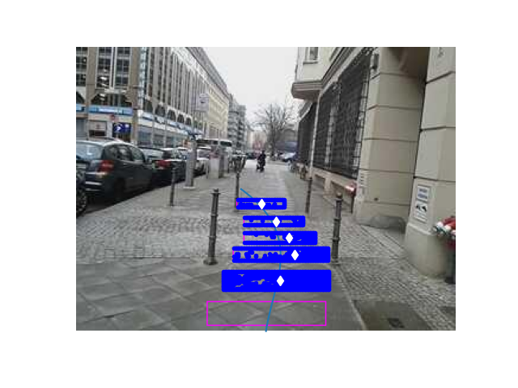

Bir arabanın önünde ya da elde tutulan tek bir kamera görüntüsü ile (monocular vision) önümüzdeki açık yolu nasıl buluruz? Sürücüsüz arabalar için bu önemli bir konu, çözüm için farklı teknikler var.
[1]‘deki çözüm şöyledir: yolu kameranın görüntüsünün alt ortasından çıkan bir eğri olarak modelle, sonra “yol piksellerini’’ bul; bunun icin görüntünün alt ortasındaki (yani hemen önümüzdeki) ufak bir kutudaki pikseller ile yol piksellerinin aşağı yukarı aynı renkte olacağından hareket et, sonra yolu temsil eden eğrinin o piksellere en iyi uyumlu formunu bulmak için filtreleme işlemi kullan.
Üstteki figürde yol modelinin kuşbakışı görünümü var. Eğri karesel bir formül olarak seçilmiş, biz küpsel form kullanacağız, ve \(z\) yerine \(y\) kullanacağız, çünkü [1]’deki yaklaşım \(z\) derinliğine göre eğrinin \(y\) noktalarını yansıtma ile ayarlıyor, biz basitlik amaçlı olarak önceden seçilmiş bir yansıtmaya göre bilinen \(y\) seviyelerini baz alacağız. Dikkat: İmajın alt ortasından çıkan bir eğriyi temsil etmek için \(y\) bazlı formül kullanıyoruz, yani
\[ y = ax^3 + bx^2 + cx + d\]
yerine
\[ x = ay^3 + by^2 + cy + d\]
Bunun sebebi belli bir \(x\) noktasından çıkan küpsel eğriyi \(x\) temelli temsilin zor olması. Fakat eksenleri değiş/tokuş yapınca çıkış noktasını kesi (intercept) üzerinden basit bir şekilde temsil edebiliriz. Mesela (320,240) boyutlarındaki bir resmin alt ortasından çıkan eğri
\[ x = ay^3 + by^2 + cy + 160 \]
ile gösterilir. İki tane eğri örneği görelim (\(a,b,c,d\) sabitleri pols
içinde),
yy = np.linspace(0,320,200)
pols = [ -4.08661281e-05, 0.79580150e-02, -2.02432986e-01, 160.]
xx = pols[3] + pols[2]*yy + pols[1]*yy**2 + pols[0]*yy**3
plt.plot(xx,240-yy)
pols = [ -4.08661281e-04, 0.79580150e-02, -2.02432986e-01, 160.]
xx = pols[3] + pols[2]*yy + pols[1]*yy**2 + pols[0]*yy**3
plt.plot(xx,240-yy)
plt.xlim(0,320)
plt.ylim(240,0)
plt.savefig('vision_70road_05.png')
Yol Pikselleri
Bu pikselleri bulmak için önce alt ortadaki bir kutu içine düşen HSV piksellerinin üç boyutlu histogramını hesaplıyoruz. Bu bize bir ayrıksal dağılım veriyor. Sonra bu dağılımı kullanarak imajdaki tüm piksellerin o dağılıma ait olma olasılığını hesaplıyoruz. Belli bir eşik değerini geçen pikselleri yol pikseli olarak işaretliyoruz.
from PIL import Image, ImageDraw, ImageFilter
import pandas as pd, zipfile
def draw_boxes_color(bs, im):
arr = np.asarray(im)
draw = ImageDraw.Draw(im)
colors = ['magenta','green','white','red','yellow']
for i,b in enumerate(bs):
fr = b[0]; to = b[1]
bnew = [(fr[0],arr.shape[0]-fr[1]),(to[0],arr.shape[0]-to[1])]
draw.rectangle(bnew,outline=colors[0])
plt.imshow(im)
def eval(x, H, edges):
i=np.argmax(x[0]<edges[0])
j=np.argmax(x[1]<edges[1])
k=np.argmax(x[2]<edges[2])
return H[i-1,j-1,k-1]
def get_pixels(box, im):
arr = np.array(im)
(yw,xw,d) = arr.shape
(bx1,by1) = box[0]; (bx2,by2) = box[1]
by1 = yw-by1; by2 = yw-by2
x1 = min(bx1,bx2); x2 = max(bx1,bx2)
y1 = min(by1,by2); y2 = max(by1,by2)
arr = arr[y1:y2, x1:x2, :]
return arr
with zipfile.ZipFile('mitte.zip', 'r') as z:
im = Image.open(z.open('105.jpg')).convert('HSV')
box = [(110,0),(200,20)]
bins = (8,8,8)
bim = get_pixels(box, im)
bnim = np.reshape(bim, (bim.shape[0]*bim.shape[1], 3))
H, edges = np.histogramdd(bnim, bins=bins, normed=True, range=[(0,255),(0,255),(0,255)])
imm = np.array(im)
nim = np.reshape(imm, (imm.shape[0]*imm.shape[1], 3))
e = map(lambda x: eval(x, H, edges), nim)
ee = np.array(e)
ee = np.log(ee + 1e-10)
imm2 = np.array(im)
nim2 = np.reshape(imm2, (imm2.shape[0]*imm2.shape[1], 3))
nim2[ee > -15] = [0,0,0]
imm2 = np.reshape(nim2,imm2.shape)
im2 = Image.fromarray(imm2,'HSV')
fig=plt.imshow(im2)
draw_boxes_color([box],im2)
plt.savefig('vision_70road_06.png')
fig=plt.imshow(im)
draw_boxes_color([box],im)
plt.savefig('vision_70road_07.png') 
Fena değil; yol ortasındaki direkler yol sayılmadı, ve genel olarak yolun gidişini görebiliyoruz.
Filtreleme
Elimizde yol pikselleri var. Bir eğri modeli var. Şimdi herhangi bir yol hipotezinden başladık diyelim, yol piksellerinin bu model üzerinde düzeltme yapmasını nasıl sağlayacağız? Eğer Kalman Filtresi (KF) kullanacaksak sonuç bir ya da daha fazla boyutlu reel sayılar olacak, o zaman ölçüm ne olacak, hata ne olacak? [1]’in kullandığı dahiyane fikir şudur: Yol hipotezi / modeli üzerinde eşit büyüklükte, belli aralıklarda, belli sayıda (bu çok önemli) şerit olduğunu düşünürüz,
İki boyuttaki yansıması

Filtreleme için tüm bu şeritler içine düşen yol piksellerini buluruz. Bu piksellerin kordinatlarının ortalamasını alırız, bu bize bir \(x\) kordinatı verir. İşte ölçüm budur, çünkü eğer yol hipotezi mükemmel olsaydı kutu içindeki tüm pikseller yol olurdu, onların ortalaması yine modelin hesapladığı \(x\) olurdu. Eğer böyle değilse, mesela soldan bir dışarı taşma var ise ortalama modelin sağına düşer, sağdan taşma var ise, modelin soluna düşer. Bu bize düzeltme için gerekli ölçümü sağlar.

Sonlu sayıda kutu var demiştik, mesela 5 (iki üstteki figürdeki gibi), o zaman ölçümümüz 5 boyutlu olacaktır.
Ayrıca KF modeli için \(F,H\) matrisleri gerekiyordu. Kalman sistemini hatırlarsak,
\[ x_k = Fx_{k-1} + Q \]
\[ z_k = Hx_k + R \]
\(H\) bize konum bilgisini dışa dönük bir tahmine çevirme imkanı verir. Konum bilgisi yol eğrisinin son halidir, o zaman \(a,b,c,d\) katsayılarını içerecek. Ölçüm ve model için önceden seçilmiş \(y\) noktaları kullanılacağız, bunlar \(y_1,y_2,..,y_5\) olsun, o zaman \(H\) ve \(H x\) çarpımı suna benzer,
\[ Hx = \left[\begin{array}{rrrr} y_1^3 & y_1^2 & y_1 & 1 \\ y_2^3 & y_2^2 & y_2 & 1 \\ y_3^3 & y_3^2 & y_3 & 1 \\ y_4^3 & y_4^2 & y_4 & 1 \\ y_5^3 & y_5^2 & y_5 & 1 \end{array}\right] \left[\begin{array}{r} a \\ b \\ c \\ d \end{array}\right] = \left[\begin{array}{r} a y_1^3 + b y_1^2 + c y_1 + d \\ a y_2^3 + b y_2^2 + c y_2 + d \\ a y_3^3 + b y_3^2 + c y_3 + d \\ a y_4^3 + b y_4^2 + c y_4 + d \\ a y_5^3 + b y_5^2 + c y_5 + d \end{array}\right] \]
ki \(d = 160\) ve \(F = I\), yani birim matrisi. \(H\) matrisi eğri modelini alıp bize ölçüm ile karşılaştırılabilecek bir sonuç veriyor. Tüm bu tahmin, düzeltme işlemleri KF matematiğinin içinde oluyor tabii. Şimdi ardı ardına üç resim üzerinde KF güncelleme kodunu görelim,
import sys; sys.path.append('../../tser/tser_kf')
import kalman
from PIL import Image, ImageDraw
import pandas as pd, zipfile
# her kutu (y-kordinati, genislik, yukseklik) ile tanimli
boxes = [(5,50,20),(35,45,15),(60,40,10),(75,30,8),(90,25,6),(105,20,6)]
yy = np.linspace(0,120,1000)
kf = kalman.KalmanFilter(dim_x=4, dim_z=5)
kf.x = np.array([[-4.08661281e-05, 0.59580150e-02, -2.02432986e-01, 160.]]).T
kf.P = np.diag([1e-4,1e-4,1e-4,1e-4])
kf.F = np.eye(4)
H = [[ylev**3, ylev**2, ylev, 1 ] for (ylev, bwidth, bhight) in boxes[1:]]
kf.H = np.array(H)
kf.R *= 10.
def rcurve(yy, kf): return kf.x[0]*yy**3 + kf.x[1]*yy**2 + kf.x[2]*yy + kf.x[3]
bins = (8,8,8)
top = 120
import itertools
idxs = [(i,j) for (i,j) in itertools.product(range(240,0,-1),range(0,320)) ]
idxs = np.array(idxs)
with zipfile.ZipFile('mitte.zip', 'r') as zz:
for i in (105,106,107):
f = plt.figure()
xx = rcurve(yy, kf) # egriyi ciz
f = '%d.jpg' % i
im = Image.open(zz.open(f)).convert('HSV')
boxes2 = []
for (ylev, bwidth, bhight) in boxes:
boxes2.append(((rcurve(ylev,kf)-bwidth, ylev),\
(rcurve(ylev,kf)+bwidth, ylev+bhight)) )
draw_boxes_color(boxes2, im)
bim = get_pixels(box, im)
bnim = np.reshape(bim, (bim.shape[0]*bim.shape[1], 3))
H, edges = np.histogramdd(bnim, bins=bins, normed=True,
range=[(0,255),(0,255),(0,255)])
imm = np.array(im)
nim = np.reshape(imm, (imm.shape[0]*imm.shape[1], 3))
e = map(lambda x: eval(x, H, edges), nim)
ee = np.array(e)
ee = np.log(ee + 1e-20)
f=plt.imshow(im)
h = np.array(im).shape[0]
plt.plot(xx,h-yy)
z = []
for (ylev, bwidth, bhight) in boxes[1:]:
low_left = (rcurve(ylev,kf)-bwidth, ylev)
up_right = (rcurve(ylev,kf)+bwidth, ylev+bhight)
boxes2.append((low_left,up_right))
mask = (idxs[:,1] >= low_left[0]) & (idxs[:,1] <= up_right[0]) & \
(idxs[:,0] >= low_left[1]) & (idxs[:,0] <= up_right[1] )
mask2 = (ee > -15.0)
idxs2 = idxs[mask & mask2]
m = idxs2.mean(axis=0)
z.append(m[1])
plt.plot(idxs2[:,1], h-idxs2[:,0], '.b')
plt.plot(m[1], h-m[0], 'wd')
z = np.reshape(np.array(z),(5,1))
plt.axis('off')
plt.savefig('out-%d.png' % i)
kf.predict()
kf.update(z)

Görülüyor ki ilk başta kutulardan bazıları bir direk üzerindeydi, bu sebeple ölçüm modelin sağına düştü. Düzeltme yapıldı, ve birkaç döngü sonrası son resimdeyiz, ve direkler arasındaki yolu gösteriyoruz.
Kaynaklar
[1] Procházka, Road Tracking Method Suitable for Both Unstructured and Structured Roads